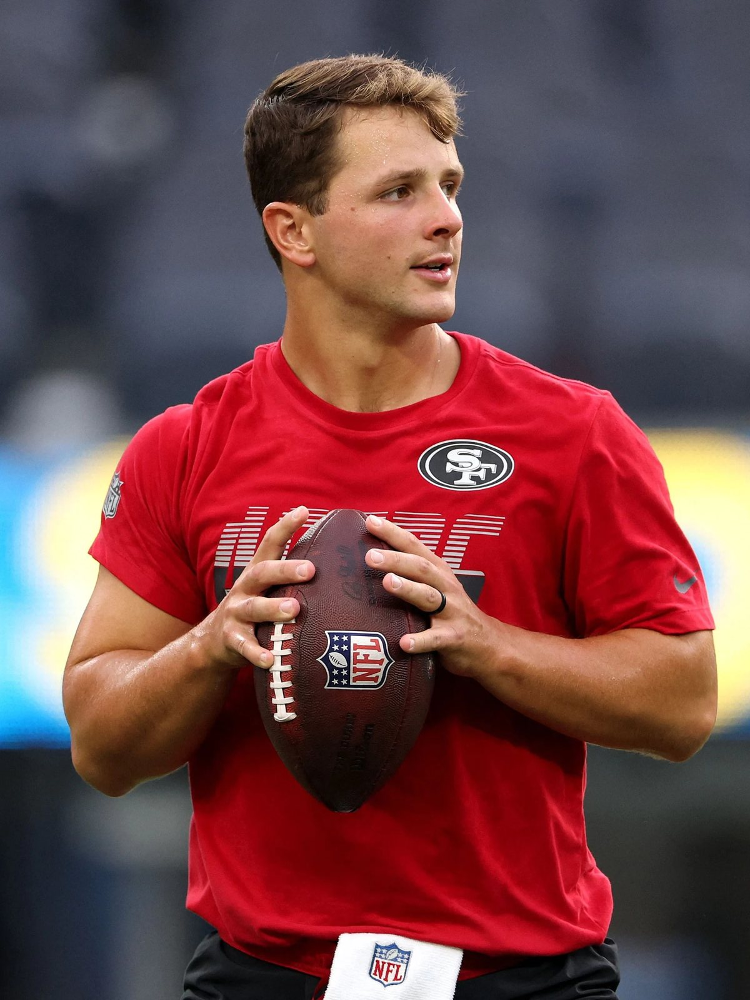
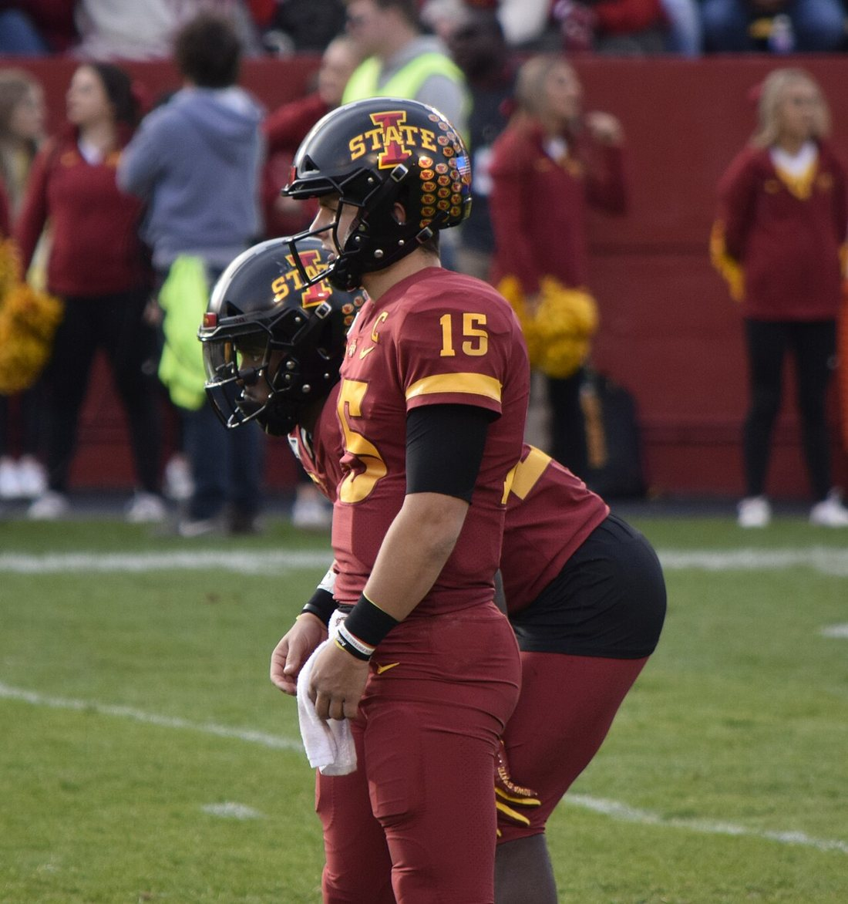

Is Brock Purdy the Greatest Quarterback Ever? What the Advanced Metrics Actually Say

Four weeks into the 2026 season, Colin Cowherd said the quiet part out loud. On his October 6 show he argued that "according to advanced metrics," Purdy isn't just the best quarterback in the NFL, "but he's the best quarterback ever." He hedged first, to be fair. He said he knows it's only four weeks and that three of the 49ers' games haven't been the toughest. But the line stuck, because the numbers behind it are real, and they're getting harder to wave away.
So let's do what a hot take never does and actually check it. Where is Purdy genuinely historic, where is the claim stretching, and what does any of it mean for the betting board heading into Sunday in Seattle?
The short version
- Through four games Purdy leads the NFL in passer rating (126.2), QBR (89.6), EPA per dropback (0.53), net yards per attempt (8.9) and success rate (60.7%), per NFL.com.
- He hasn't been sacked once in 113 pass attempts, and the 49ers are 4-0.
- His career passer rating sits at 105.7. He's 34 attempts short of the 1,500 needed to qualify for the record book, where Lamar Jackson's 102.7 is the current high.
- "Most efficient passer on record" is a fair argument. "Greatest quarterback ever" isn't there yet, and the case against it is strong.
The 2026 numbers that started this
Here's the part nobody's really disputing. Through Week 4, Purdy is 79 of 113 for 1,007 yards, 11 touchdowns and one interception. That's a 126.2 passer rating, first in the league. His 11 touchdown passes were tied for the league lead when NFL.com's Kevin Patra put him at No. 1 in the MVP race on Tuesday.
| Metric | Purdy | NFL rank |
|---|---|---|
| Passer rating | 126.2 | 1st |
| QBR | 89.6 | 1st |
| EPA per dropback | 0.53 | 1st (Lamar Jackson next at 0.29) |
| Net yards per attempt | 8.9 | 1st |
| Success rate (100+ dropbacks) | 60.7% | 1st |
| Touchdown passes | 11 | Tied for 1st |
| Times sacked | 0 | 113 attempts, zero sacks |
The number I keep coming back to is the EPA gap. Expected points added per dropback is the stat the analytics crowd trusts most, because it measures how much each pass actually moves a team toward points given the down, distance and field position. Purdy is at 0.53. The next quarterback, Lamar Jackson, is at 0.29. That isn't a lead, it's a different tier. When you see a gap that wide in a stat that usually clusters tightly, that's exactly what sends people reaching for words like "ever."
The game log backs it up. He threw three touchdowns in the 27-7 win over the Rams in Melbourne, the NFL's first game in Australia. He went 20 of 22 for 287 yards and a 149.1 rating in the 35-13 win over Miami. He threw four touchdowns in a 36-30 win over Arizona on a day the 49ers lost Mike Evans to a rib injury and Trent Williams to a stinger. Then he threw two more in Sunday's 24-14 win over Denver. According to the 49ers, that's four straight games with at least two touchdown passes and a rating of 100 or better to open a season, something only Frankie Albert (1948) had done in franchise history.
And the sack thing isn't trivia. Pro Football Network notes he's the first quarterback since Peyton Manning in 2005 to start a season's first four games without being sacked. That tells you he's processing fast enough that the pocket never gets a chance to close. It's a skill, not luck, and PFF backed that up going into the year with a league best 9.0% pressure to sack rate.
The career case is stronger than you'd think
If this were only four hot weeks, it'd be an easy column to dismiss. It isn't. Purdy has been doing a version of this since he walked on the field in 2022.
| Season | Att | Yards | TD | INT | Rating |
|---|---|---|---|---|---|
| 2022 | 170 | 1,374 | 13 | 4 | 107.3 |
| 2023 | 444 | 4,280 | 31 | 11 | 113.0 |
| 2024 | 455 | 3,864 | 20 | 12 | 96.1 |
| 2025 | 284 | 2,167 | 20 | 10 | 100.5 |
| 2026 | 113 | 1,007 | 11 | 1 | 126.2 |
| Career | 1,466 | 12,692 | 95 | 38 | 105.7 |
Look at that bottom row. A 105.7 career passer rating. The NFL needs 1,500 attempts before it'll list you, and Purdy is sitting at 1,466. As the New York Post's Evan Webeck laid out last week, Lamar Jackson's 102.7 is the qualified record right now, with Aaron Rodgers, Joe Burrow and Patrick Mahomes also above 100. Purdy will almost certainly clear the threshold this Sunday, and Webeck's math showed he'd have to have a truly awful stretch to fall under Jackson's mark first.
So there's a real, concrete version of Cowherd's claim: within a week or two, Brock Purdy is likely to be the highest rated passer in NFL history by the league's own official measure. That's not a talk show exaggeration. That's where the record book is heading.
It goes back further than the passer rating, too. Back in November 2023, CBS Sports noted Purdy owned a 116.3 rating through his first 15 career starts, ahead of Mahomes' 112.4 for the best ever at that point. In 2023 he led the league in passer rating, QBR and yards per attempt. And in June 2025, Pro Football Network's QB+ model, which weighs pressure performance, third down conversion and situational production, ranked Purdy third among all 21st century quarterbacks, behind only Peyton Manning and Mahomes. That same piece had his +0.21 career EPA per dropback tied with Mahomes for second all time, trailing only Manning.

Remember where this started. Purdy was the 262nd and final pick of the 2022 draft. He was third string. He took over only after injuries to Trey Lance and Jimmy Garoppolo, won all five of his regular season starts as a rookie, and got the 49ers to the NFC Championship Game. A guy drafted that late isn't supposed to show up on any all time efficiency list, let alone near the top of several.
Why the numbers aren't just a system mirage
The standard pushback is "it's Kyle Shanahan." We'll give that its full due in a second. But some of what Purdy does doesn't fit the idea of a passenger.
Ethan Strauss dug into this in July, and his answer was the intermediate zone, throws between 10 and 20 yards downfield. On those, Purdy has completed 67.5% for his career at 12.0 yards per attempt, and his worst single season completion rate there is 64.7%. For comparison, Strauss cited Matthew Stafford at 58.2% on intermediate throws in his MVP season and Baker Mayfield at 56.4% and 9.6 yards per attempt in Tampa. That's the hardest window in football to hit consistently, and it's where Purdy lives. Strauss also pointed out the tradeoff: Purdy's interception rate on those throws runs about double the league's overall rate. He's taking real risks and getting paid for them.
Then there's this season's supporting cast. The Arizona win came with Evans and Williams going down in the same game. PFF, heading into the year, had Purdy's 65.8 grade under pressure third in the league and credited him with the league's best EPA per play on third and fourth down the previous season among quarterbacks with at least 100 late down dropbacks. Those are the situations where scheme helps the least. You either make the throw or you don't.
The case against, at full strength
Here's where I get off the bandwagon, at least on the word "greatest."
Four games is a tiny sample. Cowherd said it himself. The schedule so far is the Rams, Dolphins, Cardinals and Broncos, and the Arizona game was a 36-30 escape after San Francisco blew most of a 17 point third quarter lead. Early season EPA leaders regress all the time. A 0.53 EPA per dropback pace would be absurd over 17 games, and history says it won't hold at that level.
The system effect is measurable, and it's not small. Neil Paine ran the numbers in February 2024 and found quarterbacks averaged 3.86 EPA per game under Shanahan versus 3.15 elsewhere, a 0.71 point bump. Paine also rated Purdy's skill group the second most talented in the league that season. Adjust for both, and Purdy's 2023 dropped from 5th among starters to 13th, somewhere between Kyler Murray and Justin Herbert. Paine's conclusion was fair: he's a genuinely good quarterback, but some of that shine belongs to the building.
The down years count. In 2024 Purdy's rating fell to 96.1 with 12 interceptions, and the 49ers went 6-11. In 2025 he played nine games around shoulder and toe injuries, and the season ended with a 41-6 divisional round loss in Seattle. Great by any normal standard? Sure. Greatest ever quarterbacks don't usually have a 96.1 season sitting in year three.
Passer rating is inflated by era. League passing efficiency has climbed for decades thanks to rule changes, route concepts and offenses built around short, high percentage throws. Every qualified quarterback above 100 for his career, Jackson, Mahomes, Rodgers and Burrow, has played in the last decade. Purdy breaking that record would be a real achievement, but it says more about him versus today's peers than him versus Joe Montana or Johnny Unitas.
And "greatest ever" is about more than efficiency. It's longevity and rings. Tom Brady won seven Super Bowls across two decades. Purdy has one Super Bowl appearance, the 25-22 overtime loss to Kansas City after the 2023 season, and he's in his fifth year. The honest framing is that he's on a historic efficiency pace, not that he's already passed the guys with 15 years of proof.
What it means for bettors
The market's already moved, so if you wanted Purdy MVP value, you mostly missed it. SportsBettingDime reported on October 6 that DraftKings had Purdy at +330, down from +900 a week earlier. Josh Allen is still the favorite at +270, with Mahomes and Trevor Lawrence at +650 and Lamar Jackson at +800. At +330 you're paying for the hot start, not getting ahead of it.
The more interesting test is Sunday. San Francisco goes to Lumen Field to face the defending Super Bowl champion Seahawks, who beat New England 29-13 in Super Bowl LX and blew the 49ers out 41-6 in that same building in January. Early numbers had the 49ers as roughly a field goal underdog, with lines between +2.5 and +3 at the books we checked. That's the spot where an elite efficiency profile either holds up against a real defense or starts its regression. It's also very likely the game where Purdy crosses 1,500 career attempts and officially takes over the passer rating record, which is a storyline the broadcast won't let you miss.
If I'm betting this, I'm not paying a premium for the GOAT narrative. The record is basically baked in. The open question is whether the EPA gap survives a defense that's already shown it can make him look ordinary.
So, is he the greatest ever?
No. Not yet, and Cowherd probably knows it. But the version of the claim that holds up is still wild for the 262nd pick in a draft: Brock Purdy is on track to be the most efficient passer the NFL has ever officially recorded, he's leading every major efficiency stat this season by a lot, and he's done enough over five years that you can't call it a fluke anymore. If he's still near the top of that list in five years, with a ring, the conversation changes. Today, "best quarterback in the league right now by the numbers" is a defensible take. "Best ever" is a headline.
Brock Purdy GOAT debate: quick answers
Who called Brock Purdy the best quarterback ever?
Colin Cowherd said on October 6, 2026 that "according to advanced metrics" Purdy is not only the best quarterback in the NFL but "the best quarterback ever," while noting it's only a four game sample.
Does Brock Purdy have the highest passer rating in NFL history?
His career rating is 105.7, above Lamar Jackson's record 102.7, but he needs 1,500 career attempts to qualify. He had 1,466 through Week 4 of 2026, so he's expected to qualify within the next game or two.
What are Brock Purdy's 2026 stats?
Through four games: 79 of 113, 1,007 yards, 11 touchdowns, one interception, a 126.2 passer rating, zero sacks, and a 4-0 record.
What are Brock Purdy's MVP odds?
DraftKings listed Purdy at +330 after Week 4, second behind Josh Allen at +270, according to SportsBettingDime on October 6, 2026.
Stats are through Week 4 of the 2026 season (games of October 4). Odds and lines move, so check your book before betting.